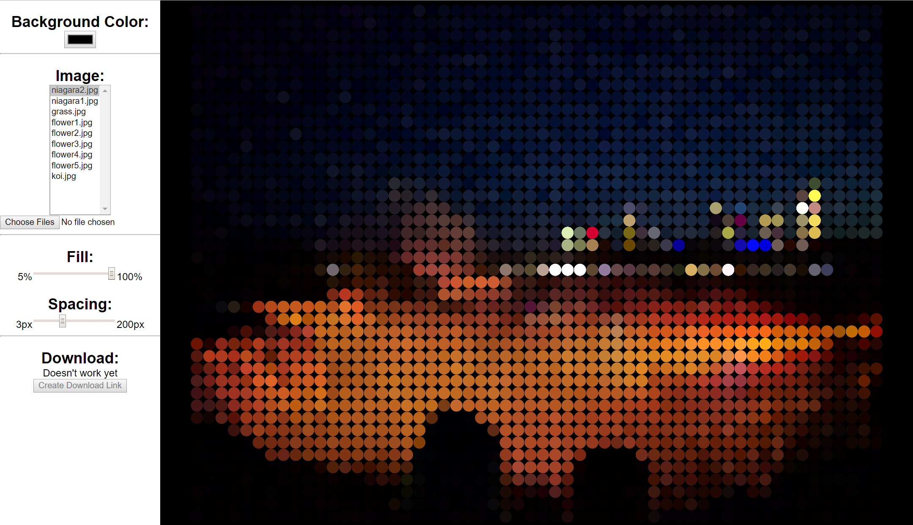
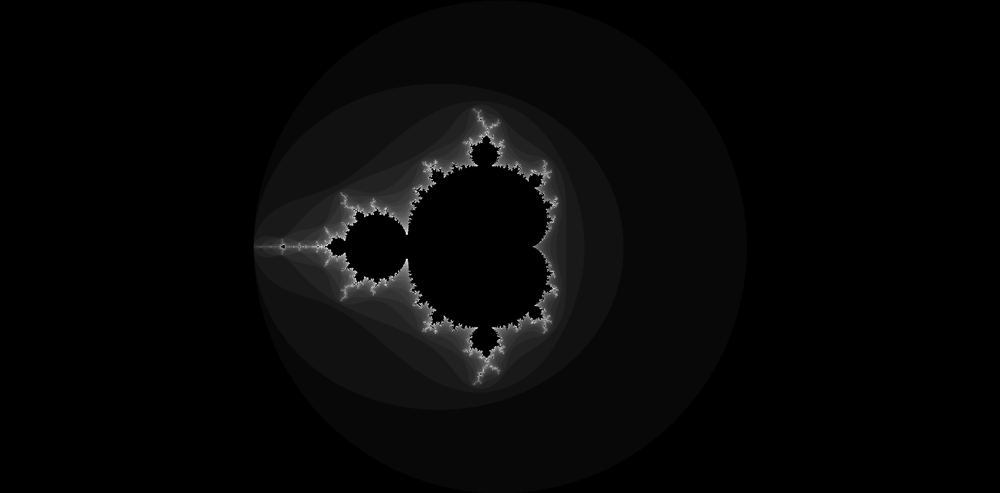

Chandler
This is my attempt at recreating the Personal Information Manager Chandler using javascript and all of its new client side features.

Photography Template
This was a website template idea that I had. The images are my friend Ellis's.

City Thing
I was playing around with Javascript's Math.random and color.adobe.com to make an "Ambient" something or other. Hows that for unspecific!

Dotty
I had an idea for something that would take pictures and almost pixelate them. There are two versions: Dotty and dotty_v1 (Which was my first attempt).
Mandelbrot Visualizer
I should have done so much more with this. Things like letting you zoom in, using workers for the rendering, and all the clever canvas stuff that people do. Well, it just makes a full scale Mandelbrot.
